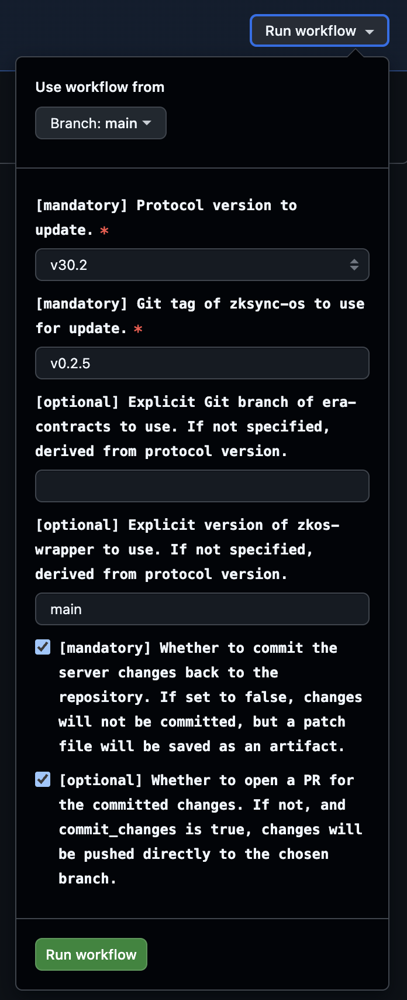
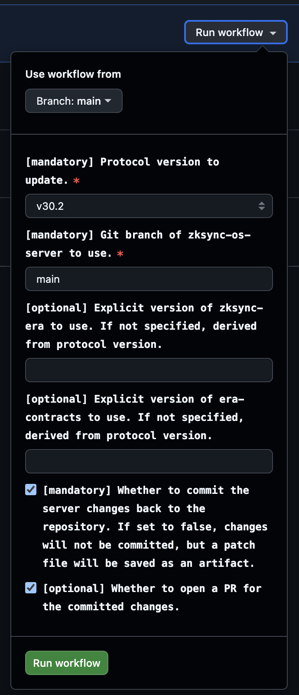

ZKsync OS Scripts
Operational scripts for ZKsync OS protocol upgrades.
This repository contains a collection of Python utilities used to safely and reproducibly perform ZKsync OS upgrades, including:
- Updating verification keys for the contracts
- Updating genesis and L1 state for the ZKsync OS server
- Updating prover configurations with new ZKsync OS version
- Updating ZKsync OS wrapper with the new ZKsync OS version
The scripts are written in shell-like style, and are designed to be explicit, easy to contribute, and automation-friendly.
If you would like to use automation to do the job for you, jump directly to the GitHub Actions guide.
If you need a local setup, please proceed to the Prerequisites document to install all necessary dependencies.
Why Python?
Python provides a good balance between readability, ease of use, and powerful libraries for scripting and automation. It allows us to write clear and maintainable code that can be easily understood by team members.
Shell scripts can become complex and hard to manage as the project grows, while Python offers better structure and error handling.
In addition, Python does not require third-party dependencies for most common tasks, making it easier to set up and run the scripts in various environments.
Why not Rust?
While Rust is a powerful language and widely used across Matter Labs, it has a longer development time for scripting tasks compared to Python. Python’s dynamic typing and extensive standard library make it more suitable for quick prototyping and iterative development without compilation.
Prerequisites
For running the scripts, you will need the following tools installed on your system.
System requirements
- Operating System: Unix-like (Linux, macOS).
- Disk Space: At least 10 GB of free disk space to accommodate the repositories, dependencies, and generated files.
- Memory: Minimum 32 GB of RAM for smooth operation.
- CPU: modern multi-core processor to handle the computational tasks efficiently.
Required tools
-
uv - Python dependency and environment manager
👉 Installation guide -
Node.js ≥ v22.x - JavaScript runtime for building contracts
👉 Installation guide (Node + npm) -
yarn ≥ 1.22 - Package manager used by the contracts workspace
👉 Installation guide -
Rust and Cargo - Required for building tools and ZKsync OS components
👉 Installation guide -
Foundry == 1.5.1 - Anvil
👉 Installation guide
foundryup -i 1.5.1
For protocol version v30.2
- Foundry-zksync == nightly-ae913af65381734ad46c044a9495b67310bc77c4
👉 Download binaries from GitHub release
For protocol version v31.0
- Foundry-zksync == 1.3.5-foundry-zksync-v0.1.5
👉 Installation guide
foundryup-zksync -i 0.1.5
Quick install (recommended)
If you don’t already have the required tools installed, the following commands will get you started on most Unix-like systems (macOS, Linux):
# Install uv
curl -LsSf https://astral.sh/uv/install.sh | sh
# Install Node.js via nvm (recommended)
curl -o- https://raw.githubusercontent.com/nvm-sh/nvm/v0.40.4/install.sh | bash
nvm install 22
# Install yarn
npm install -g yarn
# Install Rust (rustup)
curl --proto '=https' --tlsv1.2 -sSf https://sh.rustup.rs | sh
# Install Foundry
curl -L https://foundry.paradigm.xyz | bash
foundryup -i 1.5.1
# (FOR v30.2 ONLY): download foundry-zksync binaries (macOS ARM64 example, adjust for your OS/arch)
ZKSYNC_FOUNDRY_URL="https://github.com/matter-labs/foundry-zksync/releases/download"
ZKSYNC_FOUNDRY_VERSION="nightly-ae913af65381734ad46c044a9495b67310bc77c4"
curl -L ${ZKSYNC_FOUNDRY_URL}/${ZKSYNC_FOUNDRY_VERSION}/foundry_nightly_darwin_arm64.tar.gz | tar xz -C ${HOME}/.foundry/bin
# (FOR v31.0 ONLY): install foundry-zksync through foundryup-zksync
curl -L https://raw.githubusercontent.com/matter-labs/foundry-zksync/main/install-foundry-zksync | bash
foundryup-zksync -i 0.1.5
Init Python environment
The project uses uv to manage Python versions and dependencies.
# Install uv (if not already installed)
curl -LsSf https://astral.sh/uv/install.sh | sh
# Install the required Python version
uv python install
# Sync dependencies
uv sync
Verify installation
You can verify that all required tools are installed correctly:
uv --version
node --version
yarn --version
cargo --version
cast --version
forge --version
anvil --version
The output should look similar to this (example for protocol version v31.0):
# uv version
uv 0.9.25 (38fcac0f3 2026-01-13)
# node version
v22.20.0
# yarn version
1.22.22
# rust and cargo versions
cargo 1.89.0 (c24e10642 2025-06-23)
# cast and forge versions
cast Version: 1.3.5-foundry-zksync-v0.1.5
forge Version: 1.3.5-foundry-zksync-v0.1.5
# anvil version
anvil Version: 1.5.1-v1.5.1
Protocol compatibility
This page is the source of truth for the compatibility guarantees provided by ZKsync OS scripts across different protocol versions.
When using the scripts, ensure that you check out the appropriate branches of the repositories as per the protocol version you are targeting.
Compatibility between server, contracts, and zkstack CLI
| protocol | server | era-contracts | zksync-era (zkstack_cli) |
|---|---|---|---|
| v30.2 | main | zksync-os-stable | zkstack-for-zksync-os |
| v31.0 | main | draft-v31-zksync-os | draft-v31 |
Compatibility for foundry versions
| protocol | foundry-zksync | anvil version |
|---|---|---|
| v30.2 | nightly-ae913af65381734ad46c044a9495b67310bc77c4 | 1.5.1 |
| v31.0 | 1.3.5-foundry-zksync-v0.1.5 | 1.5.1 |
Environment variables
All scripts are configured via environment variables. This allows the same scripts to run locally, in CI, or against different repositories without code changes and not overloading scripts with command-line arguments.
Environment variables fall into three categories:
-
Common environment variables
Used by all scripts to control general behavior such as logging and workspace layout. -
Script-specific environment variables
Used only by a particular script to customize its behavior. -
Path environment variables
Used to point scripts to required checked-out repositories.
Common environment variables
These variables are supported by all scripts unless stated otherwise.
| Variable | Required | Description | Default |
|---|---|---|---|
REPO_DIR | ✅ Yes | Path to the repository that will be modified by the script. | — |
WORKSPACE | ❌ No | Temporary working directory for intermediate files. | .workspace |
VERBOSE | ❌ No | Enable verbose logging and subcommands output (1 or true). | false |
Script-specific variables
Some scripts require additional environment variables. For example:
PROTOCOL_VERSION— used by server update scriptsZKSYNC_OS_TAG— used when selecting a specific ZKsync OS tag for updates
Example
The following example shows how to run a script with all required environment variables defined inline:
WORKSPACE="${PWD}/.custom_workspace" \ # Optional: specify custom workspace path
VERBOSE=true \ # Optional: enable verbose logging
REPO_DIR="/path/to/era-contracts" \ # Required: path to repo for updating
ZKOS_WRAPPER_PATH="/path/to/zkos-wrapper" \ # Required: script-specific path
ZKSYNC_OS_TAG=latest \ # Required: script-specific variable
uv run -m scripts.update_vk
Running in GitHub Actions
Use this guide if you want to run the scripts via GitHub Actions CI instead of executing them locally.
Manual GitHub Actions workflows are available for the following scripts:
This documentation assumes you have permission to run workflows in Matter Labs repositories.
How to run the workflows
- Open the workflow page
- Choose the desired workflow from the left sidebar
- Click Run workflow on the upper right side
- Fill in the input parameters
- Click Run workflow on the bottom to start the job
Available workflows
Please, jump to the corresponding script section for more details on each workflow:
Outputs and artifacts
On successful runs, the workflow uploads, for example:
server_<protocol_version>.patchcontracts_<protocol_version>.patch
On failed runs, the workflow uploads:
- Logs from the workspace
.logsdirectory
Commit and PR behavior
commit_changes = false- No commit is created
- A
.patchfile is uploaded as an artifact
commit_changes = trueandopen_pr = false- Changes are pushed directly to the selected base branch
commit_changes = trueandopen_pr = true- A temporary branch is created
- A PR is opened automatically
When to use CI vs local execution
Use GitHub Actions when:
- You want reproducible and reliable updates
- You want consistent environment and tooling versions
Use local scripts when:
- Debugging or developing scripts
- Iterating on update logic
- Testing experimental changes
Scripts
Operational scripts for ZKsync OS protocol upgrades:
- Update era-contracts: verification key generation
- Update server: genesis and l1 state
- Update zkos-wrapper: prepare for verification key generation
- Update prover: prepare for the protocol upgrade
Update verification keys
Updates era-contracts repository with new set of verification keys generated from the latest ZKsync OS binary and trusted setup.
Use this script when you need to update verification keys for your contracts after a new ZKsync OS or contracts release.
Usually, the script is used by the protocol upgrade operator or automation to perform the protocol upgrade.
Script performs the following steps:
- Downloads the trusted setup (CRS) file
- Downloads the updated ZKsync OS binary for a specified release tag
- Generates a new SNARK verification key using the trusted setup and ZKsync OS binary
- Regenerates verifier smart contracts
- Produces updated Solidity verifier contracts for ZKsync OS
- Recomputes contracts hashes affected by the verifier changes
The script updates the following files in the era-contracts repository:
l1-contracts/contracts/state-transition/verifiers/ZKsyncOSVerifierPlonk.sol- Plonk verifier contracttools/verifier-gen/data/ZKsyncOS_plonk_scheduler_key.json- Plonk verifier key dataAllContractsHashes.json- recomputed contract hashes
Here is an example of a successful commit for the reference.
Commit example here is just for the reference.
The script itself does not perform any git operations (commit/push/PR creation). It is expected that the caller (manual operator or automation) will handle these operations after the script successfully completes.
Local use
REPO_DIR="/path/to/era-contracts" \
ZKOS_WRAPPER_PATH="/path/to/zkos-wrapper" \
ZKSYNC_OS_TAG=latest \
uv run -m scripts.update_vk
To run the script, you will need:
- General prerequisites including uv, Rust and NodeJS
- Specific release tag of ZKsync OS from
zksync-osreleases specified throughZKSYNC_OS_TAGenv variable
In addition, the script requires access to the following repositories, which should be specified via corresponding path environment variables:
| Repository | Env Variable | Protocol version → Branch Mapping |
|---|---|---|
| era-contracts | REPO_DIR | v30.2 → zksync-os-stablev31.0 → draft-v31-zksync-os |
| zkos-wrapper | ZKOS_WRAPPER_PATH | all versions → main (latest) |
Please, additionally check protocol compatibility to ensure the correct versions are used.
GitHub Actions
The script supports execution via GitHub Actions update-vk.yaml workflow
that can be triggered manually via GitHub Actions UI interface.
Input parameters
| Name | Required | Description |
|---|---|---|
protocol_version | ✅ | Protocol version to update verification keys for. |
zksync_os_tag | ✅ | Git tag of zksync-os used to generate the keys. |
era_contracts_branch | ❌ | Explicit era-contracts branch. Defaults to protocol mapping. |
zkos_wrapper_version | ❌ | Explicit zkos-wrapper version. Defaults to protocol mapping. |
commit_changes | ❌ | Whether to commit the updated keys. Defaults to true. |
open_pr | ❌ | Whether to open a PR. Defaults to true. |

Follow more detailed tutorial in the GitHub Actions guide.
Outputs
On successful runs, the workflow uploads contracts_<protocol_version>.patch Git patch file with the changes made to the era-contracts repository.
If commit_changes and open_pr are set to true, a PR is opened automatically with the changes.
On failed runs, the workflow saves logs from the workspace .logs directory as an artifact.
Script dependencies
The script relies on the following external resources:
- Trusted setup CRS file
setup_2^24.key - ZKsync OS
multiblock_batch.binbinary from zksync-os releases - zkos-wrapper part to generate verification keys
- Plonk and Flonk verifier contract generator
recompute_hashes.shscript to recompute contract hashes after update
If the script fails, it means that one of the dependencies is changed or unavailable. In this case, the script needs to be updated accordingly.
- CRS checksum mismatch → trusted setup file updated upstream
- To fix: check with DevOps, and update the expected checksum in the script
- Contracts regeneration failure → incompatible tooling on the
era-contractsbranch- To fix: align new
era-contractstooling updates with the scripts
- To fix: align new
Update server: generate genesis and L1 state
Updates zksync-os-server and its local-chains setup repository with the new genesis and L1 state.
Usually, the script is used by the protocol upgrade operator or automation to perform the protocol upgrade.
It can be used to create or update local test setups for a given protocol version or with a custom version of era-contracts.
Script performs the following steps:
- Build zkstack CLI: Compiles the zkstack command used to create/init ecosystems and chains.
- Build L1 contracts.
- Generate
genesis.json. - Fund necessary rich wallets.
- Deploy required L1 contracts.
- Update local-chains configurations, copies required chains and wallets files.
- Generate L1 -> L2 deposit tx for rich wallets.
- Updates verification key hash.
- Regenerate
contracts.jsonused by the L1 watcher.
The script updates the following files in the zksync-os-server repository:
local-chains/<protocol_version>/**/*- local chain configuration for chosen protocol versionlib/l1_watcher/src/factory_deps/contracts.json- L1 contracts configuration used by the L1 watcherlib/types/src/protocol/proving_version.rs- new verification key hash (if it changed, otherwise it is not updated)
Local use
REPO_DIR="/path/to/zksync-os-server" \
ERA_CONTRACTS_PATH="/path/to/era-contracts" \
ZKSYNC_ERA_PATH="/path/to/zksync-era" \
PROTOCOL_VERSION=<protocol_version> \
uv run -m scripts.update_server
To run the script, you will need:
- General prerequisites including uv, Rust and NodeJS
- Specific protocol version specified through
PROTOCOL_VERSIONenv variable- Available protocol versions are defined in the local-chains directory of the
zksync-os-serverrepository as subdirectories. For example,v30.2orv31.0.
- Available protocol versions are defined in the local-chains directory of the
In addition, the script requires access to the following repositories, which should be specified via corresponding path environment variables:
| Repository | Env Variable | Protocol version → Branch Mapping |
|---|---|---|
| zksync-os-server | REPO_DIR | all versions → main |
| era-contracts | ERA_CONTRACTS_PATH | v30.2 → zksync-os-stablev31.0 → draft-v31-zksync-os |
| zksync-era | ZKSYNC_ERA_PATH | v30.2 → zkstack-for-zksync-osv31.0 → draft-v31 |
Also, make sure you have the right tooling versions:
| protocol | foundry-zksync | anvil version |
|---|---|---|
| v30.2 | nightly-ae913af65381734ad46c044a9495b67310bc77c4 | 1.5.1 |
| v31.0 | 1.3.5-foundry-zksync-v0.1.5 | 1.5.1 |
Detailed instructions on how to install the required tooling can be found in the prerequisites guide.
Please, additionally check protocol compatibility to ensure the correct versions are used.
GitHub Actions
The script supports execution via GitHub Actions update-server.yaml workflow
that can be triggered manually via GitHub Actions UI interface.
Input parameters
| Name | Required | Description |
|---|---|---|
protocol_version | ✅ | Protocol version to update. Determines default dependency mappings. |
zksync_server_branch | ✅ | Base branch of zksync-os-server used for the update. |
zksync_era_version | ❌ | Explicit zksync-era version. If empty, derived from protocol_version. |
era_contracts_version | ❌ | Explicit era-contracts version. If empty, derived from protocol_version. |
commit_changes | ❌ | Whether to commit changes back to the repository. Defaults to true. |
open_pr | ❌ | Whether to open a PR for the committed changes. Defaults to true. |

Follow more detailed tutorial in the GitHub Actions guide.
Outputs
On successful runs, the workflow uploads server_<protocol_version>.patch Git patch file with the changes made to the zksync-os-server repository.
If commit_changes and open_pr are set to true, a PR is opened automatically with the changes.
On failed runs, the workflow saves logs from the workspace .logs directory as an artifact.
Script dependencies
The script relies on the following external resources:
If the script fails, it means that one of the dependencies is changed or unavailable. In this case, the script needs to be updated accordingly.
- Wrong tooling versions → incompatible with the contracts and scripts
- To fix: check the required versions in the
protocol version and branchestable above and in the protocol compatibility guide, and install the correct versions
- To fix: check the required versions in the
- Unable to start anvil → anvil is already running on 8545 port
- To fix: stop another anvil instances you already have or change the port it runs on
Any other issue in the operations performed by the script is likely caused by changes in the dependencies, and requires checking the steps of the script and updating it accordingly.
If you notice any such changes are required, please, reach out to the owners or create a PR with the required updates.
Update ZKsync OS wrapper
Updates zkos-wrapper repository with the new SNARK proof
to prepare verification key generation on the next step using update_vk.py script.
Local use
REPO_DIR="/path/to/zkos-wrapper" \
ZKSYNC_AIRBENDER_PATH=/path/to/zksync-airbender \
uv run -m scripts.update_wrapper
To run the script, you will need:
- General prerequisites including uv, Rust and NodeJS
- Access to the
zkos-wrapperrepository specified throughREPO_DIRenv variable - Access to the
zksync-airbenderrepository specified throughZKSYNC_AIRBENDER_PATHenv variable
Update prover with new ZKsync OS binary
Updates ZKsync Airbender Prover with a new ZKsync OS binary.
Use this script when you need to update the prover with a new ZKsync OS binary after a new ZKsync OS release.
Script performs the following steps:
- Replaces ZKsync OS binary used by the prover with a new version corresponding to the specified release tag.
- Updates prover configuration to reference the new binary and its associated parameters.
Local use
REPO_DIR="/path/to/zksync-airbender-prover" \
ZKSYNC_OS_TAG=<new_zksync_os_tag> \
uv run -m scripts.update_prover
To run the script, you will need:
- General prerequisites including uv, Rust and NodeJS
- Specific release tag of ZKsync OS from
zksync-osreleases specified throughZKSYNC_OS_TAGenv variable
Developer Documentation
Scripts architecture
TBD
Commands and utilities
TBD
Backward Compatibility
TBD
Testing the scripts
TBD